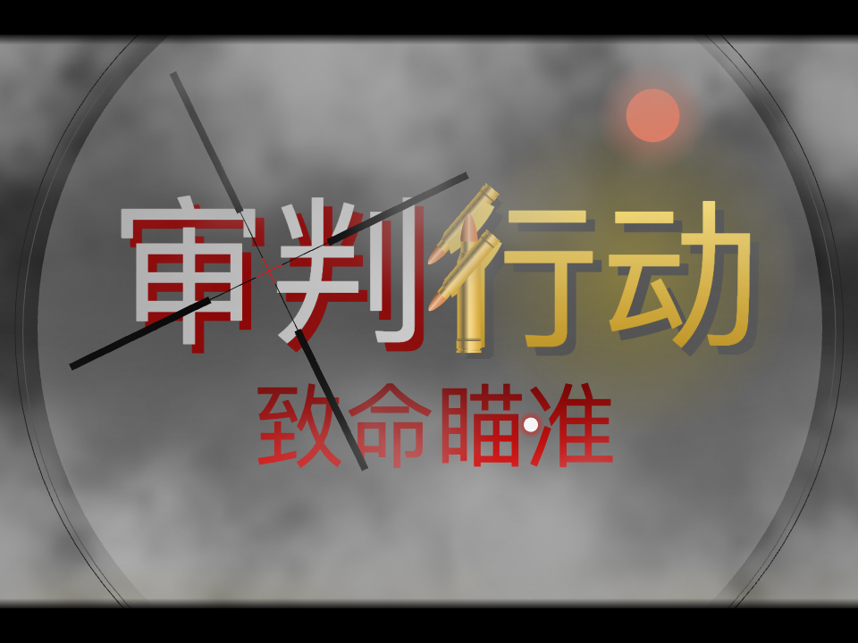

审判行动：致命瞄准

作品简介
《审判行动：致命瞄准》是一款专注于单发狙击枪战斗的战术射击游戏，玩家将扮演一名精英狙击手，在各种高风险任务中执行精准打击，完成致命狙杀。游戏强调真实的狙击体验，包括弹道计算、风速影响、心跳控制等元素，力求带给玩家极致的战术狙击沉浸感。
核心玩法
- 真实狙击模拟 - 采用物理弹道模拟，考虑距离、风速、重力、呼吸控制等因素，考验玩家的狙击技巧。
- 战术任务执行 - 任务包含暗杀、破坏等多种目标，玩家需制定战术策略，灵活应对。
- 多种狙击枪械 - 仅包含单发狙击枪，如 AMR、巴雷特 M82A1、MK3、SV98、AWM。
- 动态环境影响 - 天气、地形、目标移动等环境因素会影响射击，需要玩家精确计算。
- 自定义装备系统 - 可对狙击步枪进行配件升级，如高倍率瞄具，或进行技能升级以适应不同任务需求。
- 沉浸式任务模式 - 任务设定基于真实战场，部分任务具有时间限制，鼓励玩家自由发挥。
游戏模式
- 任务模式：随故事驱动，扮演狙击手执行各种致命任务，如极限距离狙击、移动目标狙杀等。
- 靶场模式：提供不同距离靶标，击杀目标可获得相应奖励。
操作说明
- 瞄准：鼠标指针进行瞄准，按住 Q / E 进行左倾 / 右倾。
- 射击：鼠标左键进行射击。
- 呼吸控制：按住 空格 进行屏息以减少准星抖动，提高射击精准度。
- 换弹：鼠标左键进行拉栓 / 换弹。
- 道具使用 / 切换：滚动鼠标中键可调出相应道具，使用鼠标左键更换狙击配件 / 使用道具。
开发周期
- 前期策划与原型设计（1-2 个月）：确定核心玩法、物理引擎、关卡设计。
- 开发与测试阶段（1-2 个月）：包括程序开发、美术设计、逻辑构建等。
- 优化与发布（2-3 个月）：优化性能，进行最终测试，并发布RC版本。
其他信息
当前版本： RC 1.0.0
文件大小： 42MB
游玩处
返回 作品集